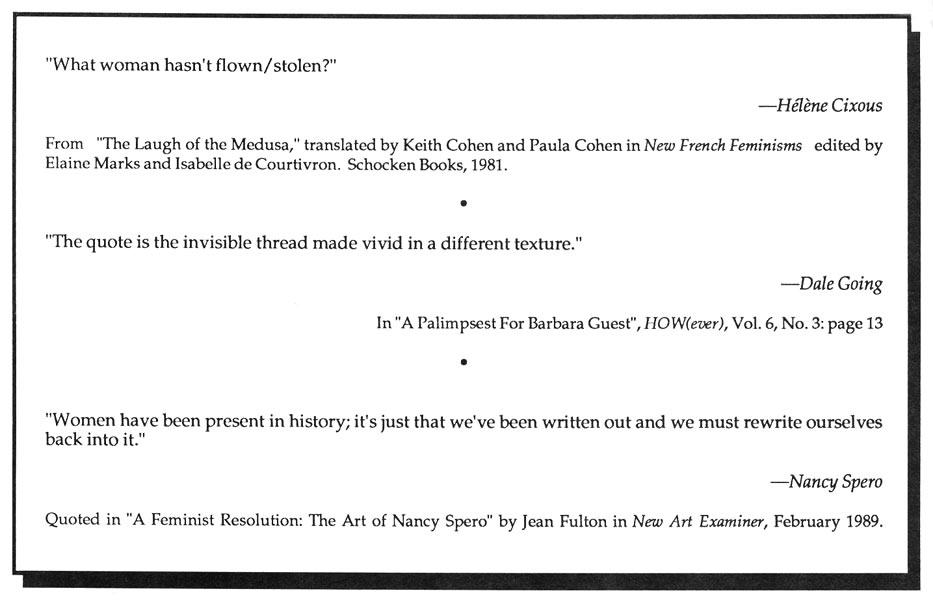

Editors' Notes
Revisions to our most recent issue, Vol. VI, No. 2: "A Force of Language", Beverly Dahlen's extended review of It Then by Danielle Collobert (translated by Norma Cole) appears in Sulfur 27, Fall 1990. An additional translation of Gertrude Stein's Tender Buttons has been brought to our attention: a 1988 publication by Professor Hisao Kanaseki, specialist in American Studies at Tokyo University.
•
An interest beyond the irony of postmodern pastiche moved us to track other soundings of quotation. New writing that incorporates or splices material to re-activate or re/place its sources. Subversion of claims of property & what's proper. Toward an archeology of breath - quoting what has been left un/re/marked. Quotation as a kind of question-marking -- cultural activism that may transform or illuminate (x-ray) the "original".
 --M.S.
--M.S.
•
We're grateful for our contributors' responses to our previous issue. Also received with pleasure: a 1991 grant from the Iowa Arts Council toward production of the remaining numbers of Volume VI.
•
Recently published or soon to appear: Peculiar Motions with poetry by Rosmarie Waldrop and 'visual interventions' by Jennifer Macdonald, from Kelsey St. Press. Two new books of poetry by Elizabeth Robinson: Bed of Lists also from Kelsey St. Press and In the Sequence of Falling Things, Paradigm Press. From Sun & Moon Press: By Ear by Gloria Frym in their New American Poetry Series and Gertrude Stein's Tender Buttons, the first single volume English language edition since its original publication in 1914. Red Letter Press has brought out Karen Brodine's Woman Sitting at the Machine, Thinking: Poems 1978-1987. Harryette Mullen's Trimmings is out from Tender Buttons. Up At Two, new poems by Frances Phillips, is available from Hanging Loose Press. From O Books: Kismet by Pat Reed. Tribes by Martha Courtot, a beautifully handmade miniature book is available from Ox Head Press, Route 3, Box 136, Browerville MN, 56438. Rachel Blau DuPlessis' Draft X: Letters from Singing Horse Press, PO Box 40034, Philadelphia, PA 19106. From Burning Deck: The Windows Flew Open by Marjorie Welish. Mauve Desert, by Nicole Brossard (translated by Susanne de Lotbinière-Harwood) is out from Coach House Press.
•
SIX, a new journal of experimental poetry and prose edited by a collective of 6 Philadelphia women, welcomes work that "crosses the boundaries of cultures and genres." Available in Spring/Fall at $10 a year, $5 an issue from 44 W. Washington Ln, Philadelphia, PA 19144 (checks payable to Phyllis Wat). After opening much new territory, f.(Lip), the Canadian magazine of feminist innovative writing has announced its closing. Tessera - focusing on the theoretical and experimental writing of Québécoise and English-Canadian feminist writers - continues. Recent issues include: No. 7 "Towards Feminist Narratology"; No. 8 "Focusing on the Autograph (e)"; No. 9 "On Changing the Surface": 350 Stong, York University, 4700 Keele St., North York, Ontario M3J 1P3, Canada. RE*MAP invites responses to a forthcoming issue on narrativity "to investigate the (re)newed function of the narrative strain within contemporary poetics". Subscriptions ($10.00 for 3 issues) to Carolyn Kemp: 3431 Magnolia St. Oakland CA 94608.
•
Other Modernist/Feminist scholarship of interest: The Gender of Modernism: A Critical Anthology, edited by Bonnie Kime Scott, (Indiana University Press, 1990) --representing "forgotten modernist territory". Signets: Reading H.D., edited by Susan Stanford Friedman and Rachel Blau DuPlessis, University of Madison Press, 1990. Also: Subversive Intent: Gender, Politics and the Avant-Garde by Susan Rubin Suleiman, Harvard University Press, 1990.
Cover notes: Maria McVarish is an architect and artist living in San Francisco.
HOW(ever), ISSN 0895-5-5743, is available in a sixth series of four numbers. For libraries interested in purchasing the complete series, beginning with Vol. I, we have a limited number of archival sets. Archival sets cost $15 per volume for individuals; $18 for institutions. Subscriptions for Vol. VI cost $10 for individuals; $12 for institutions. Individual copies of HOW(ever), often asked for as "sample copies," are available at $3 each from Small Press Distribution, 1814 San Pablo, Berkeley, CA 94702. Subscription checks for Volume VI of HOW(ever) should be made out to: HOW(ever), c/o Stricker & Kim: 1171 East Jefferson, Iowa City, Iowa, 52245. $10 (individuals), $12(institutions).
